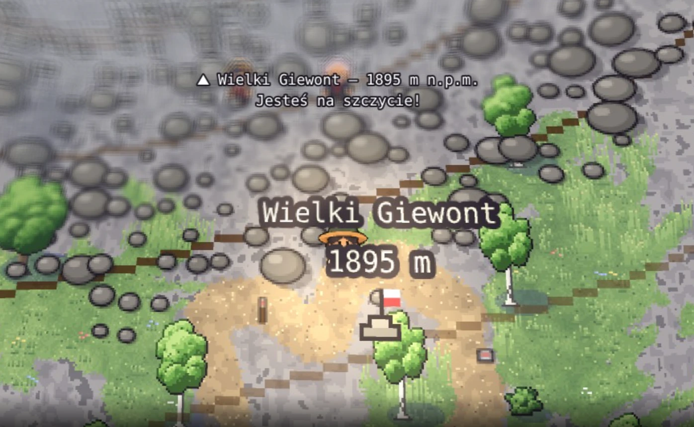
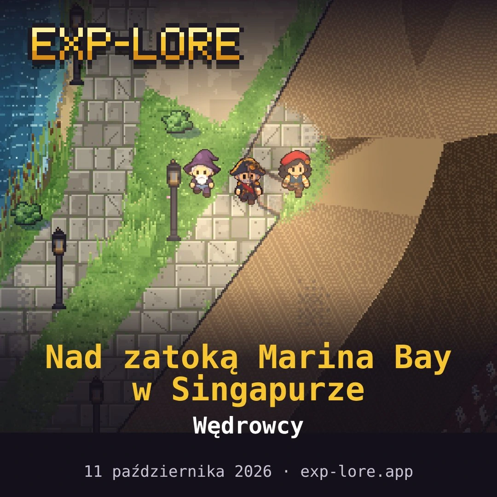

From the mountain journal
Player X reaches Giewont!

1,895 metres, a rocky trail and finally: “You are at the summit!” Player X has reached Wielki Giewont in Exp-lore. The journey shows that adventure extends beyond city streets — mountains await on the map too.
Where will your hero go next? Choose somewhere you remember from a holiday, or a summit you have yet to visit.
Sample story · Player X is a fictional name used for this article.A letter to the editor
“Who can send a photo from Singapore?”

One explorer would like to see Marina Bay through another player’s eyes. They are asking for a souvenir photo from Singapore — like this card showing the heroes and their destination.
Exploring the world does not always end in a fight or a conquered summit. Sometimes the best souvenir is a picture of the place your curiosity led you to.
A sample editorial letter, illustrated with a real in-game card.